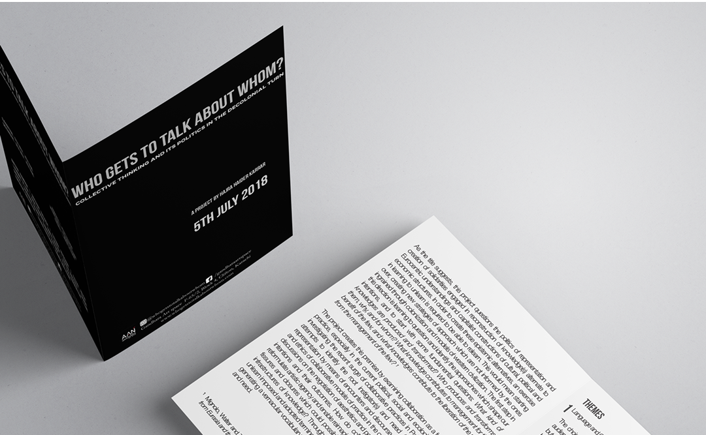
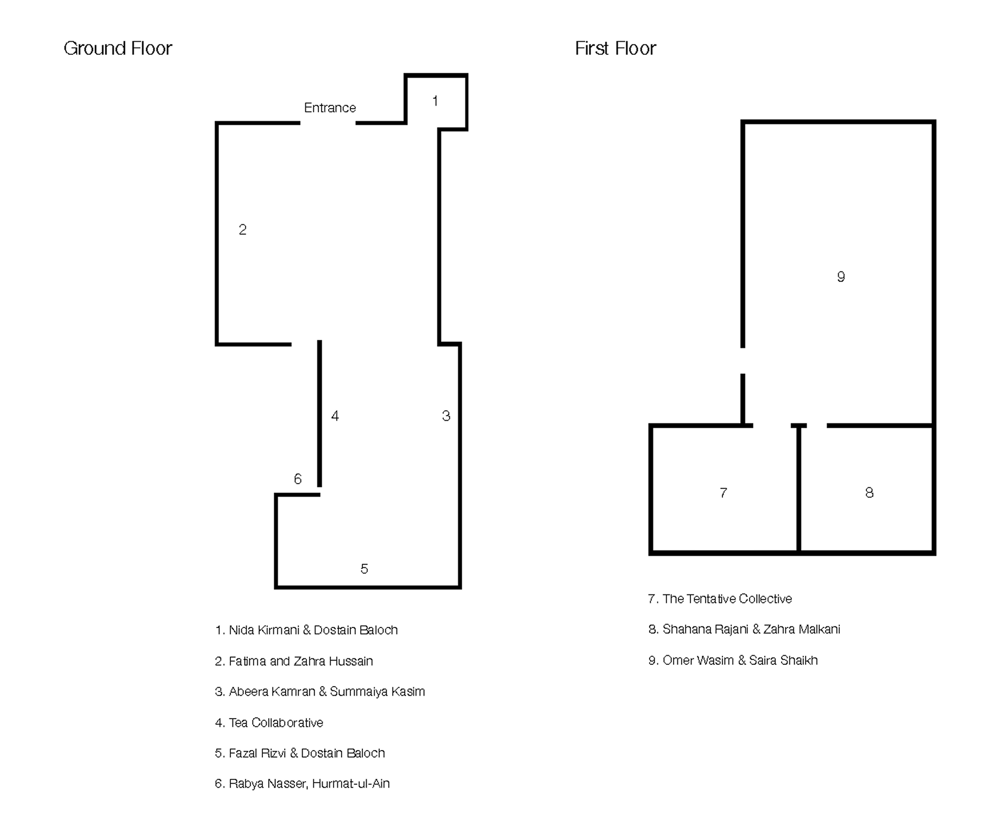
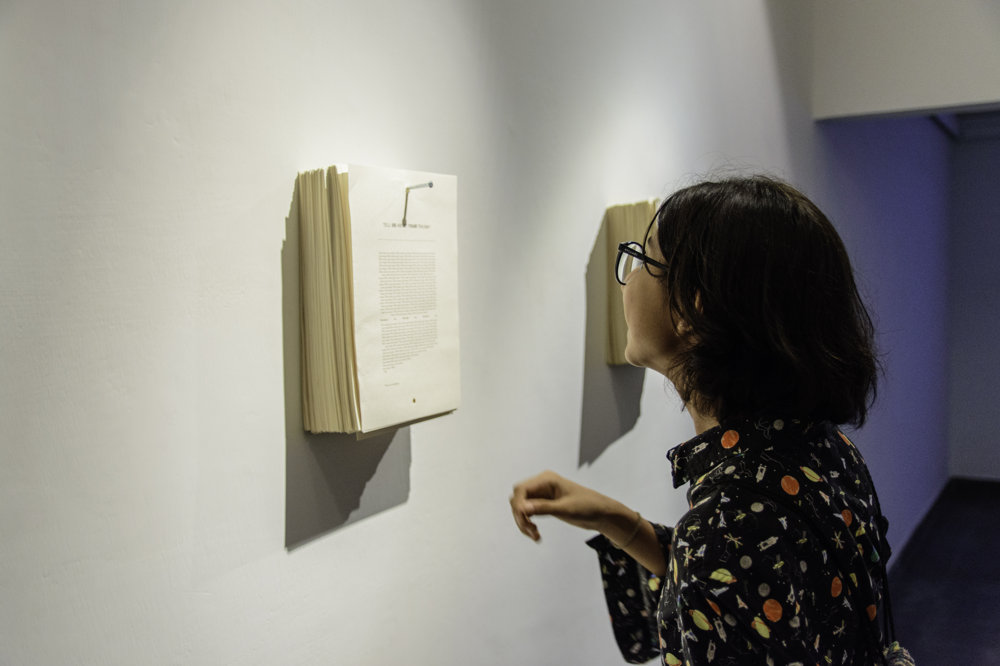
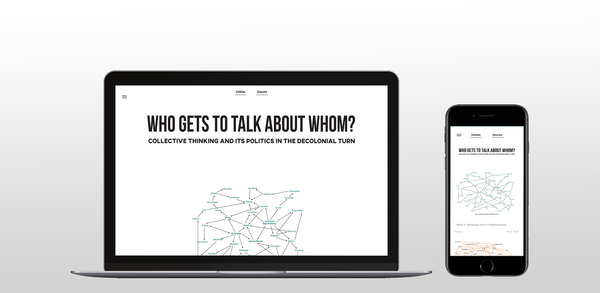

Who Gets To Talk About Whom?
Exhibition Identity and Website Design
Exhibition Identity · Collateral Design · Web Design · Information Architecture · HTML/CSS · Designing within Constraints
Institution:
Gandhara Art Space
Role:
Communication Designer
Year:
2018
Team:
Hajra Haider Karrar (Curator) Fiza Khatri (Assistant Curator)
Context
An exhibition and discursive program held at Gandhara Art Space needed an identity and a website on a very small budget.
Tasks
Designed the exhibition collateral and promotional material for social media.



Actions
Structured the information architecture of website in two sections: exhibition and discursive, with resources sorted by theme. This was done to mirror the format of the exhibition.


Constraints
Built on Tumblr to keep costs at zero, writing custom HTML around the platform's limits.
Reflection
With no budget, the constraint became the brief. Tumblr’s limits pushed me to structure the site exactly like the exhibition, which made it easier to navigate. It was also my way into Karachi’s art community, and those relationships led directly to later projects like Look at the City from Here.